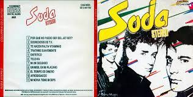
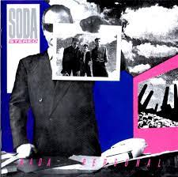
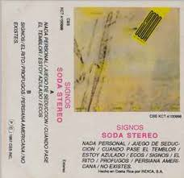
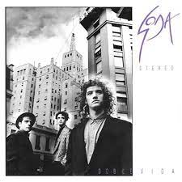
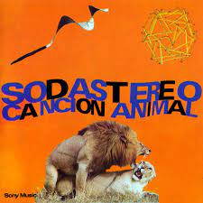
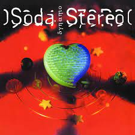
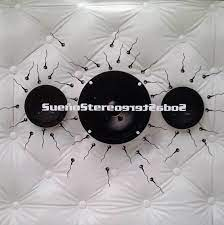

Recorrido Musical de la banda
Soda Stereo
Soda Stereo es el nombre del álbum debut de estudio homónimo grabado por el grupo argentino Soda Stereo. Fue lanzado al mercado bajo el sello discográfico CBS Discos el 27 de agosto de 1984. La producción de este álbum debut estuvo a cargo de Federico Moura, vocalista y líder de Virus.
Nada Personal
Nada personal es el nombre del segundo álbum de estudio del grupo musical de Argentina Soda Stereo, y fue editado en Argentina el 21 de noviembre de 1985. Fue reeditado en CD por primera vez en 1991. De este álbum, el ranking de las 500 mejores canciones del rock iberoamericano por Al Borde en 2006 premió la canción «Cuando pase el temblor» con el puesto 84°,1 el de las 20 mejores canciones del rock en español por E! en 2011 con el 12°,2 el de las 100 mejores canciones del rock argentino por la Rolling Stone Argentina y MTV en 2002 con el 68°,3 y el de las 100 mejores canciones del rock argentino por Rock.com.ar en 2007 premió la canción «Nada personal» con el 74°.4
Signos
Signos es el tercer álbum de estudio de la banda Argentina Soda Stereo, publicado el 10 de noviembre de 1986. Fue producido por Soda Stereo. Es considerado por la mayoría de los críticos como el segundo mejor álbum de la banda, después de Canción animal, de 1990. En este álbum se destacan canciones como: «Signos», «Prófugos», «El rito» y «Persiana americana». Ya establecidos como un grupo de alcance internacional, la Gira Signos que promocionó el disco visitó Argentina, Paraguay, Bolivia, Ecuador, Colombia, Costa Rica, México, Venezuela, Chile y Perú.
Doble vida
Doble vida es el cuarto álbum de estudio del grupo musical de Argentina Soda Stereo, grabado y editado en 1988. Producido por Carlos Alomar, este fue el segundo de los únicos 2 álbumes de Soda Stereo producidos por alguien fuera del grupo musical, siendo el otro Soda Stereo, el álbum debut, que fuera producido por Federico Moura de Virus.
Cancion animal
Canción animal es el quinto álbum de estudio del grupo musical de Argentina Soda Stereo, publicado el 17 de septiembre de 1990. Fue grabado entre junio y julio de 1990 en Criteria Recording Studios de Miami, Florida; con la producción de Gustavo Cerati y Zeta Bosio. Canción animal es considerado como el mejor álbum de la banda en toda su carrera, y dejó una huella no solo en el rock argentino sino en todo el continente. Es considerado como uno de los discos más importantes y emblemáticos en la historia del rock en español, apareciendo entre los primeros puestos en múltiples listados de los mejores álbumes del rock en español de todos los tiempos.
Dynamo
Dynamo es el sexto álbum de estudio del grupo musical de Argentina Soda Stereo. Fue grabado y mezclado en el Estudio Supersónico, en Buenos Aires durante el año 1992. Es considerado por muchos como uno de los mejores álbumes de estudio del grupo.34 Fue certificado con un doble disco de platino por las preventas, con el paso del tiempo se vendieron más copias.5 En el tiempo de su lanzamiento la recepción por parte del público fue tibia en comparación con el éxito que tuvo el anterior trabajo del grupo, Canción animal.
Sueño stereo
Sueño Stereo es el séptimo y último álbum de estudio del grupo de Argentina Soda Stereo, lanzado al mercado el 29 de junio de 1995. Este disco tiene canciones destacadas tales como «Disco eterno», «Paseando por Roma», «Ella usó mi cabeza como un revólver» y una de sus canciones más conocidas «Zoom». Sueño Stereo logró el 4.º puesto de los 10 mejores álbumes del rock latinoamericano por la Rolling Stone Estados Unidos en 2012,1 y el 41.er puesto de los 250 mejores álbumes del rock iberoamericano por Al Borde en 2006.2 De este álbum, el ranking de las 500 mejores canciones del rock iberoamericano por Al Borde en 2006 premió «Ella usó mi cabeza como un revólver» (206.º) y «Zoom» (129.º).3 El video de «Ella usó mi cabeza como un revólver», dirigido por el argentino Stanley y filmado en Santiago de Chile, fue ganador del Premio MTV de la Gente de 1996, por entonces único premio MTV a la música latina.